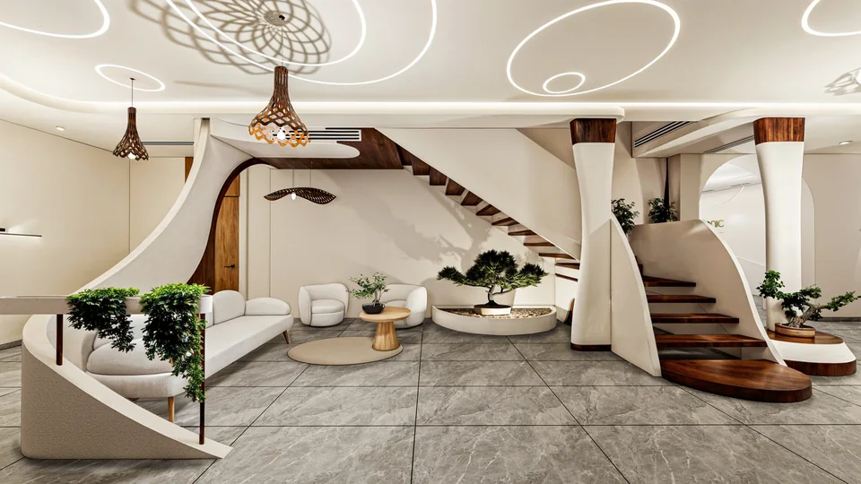
ArchitectureICONIC Forest Boutique Hotel, Tiranë
Hospitality · 2026
GR ArchitectureTiranë, Albania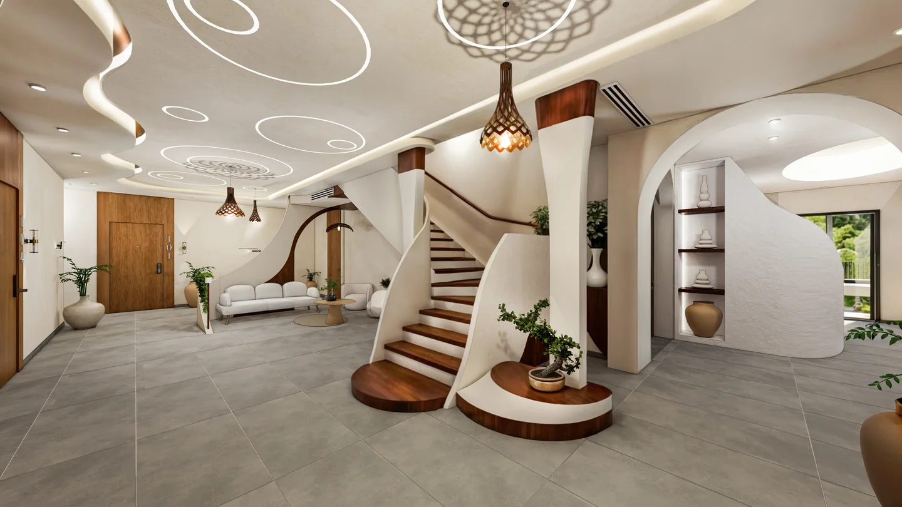
Architecture · Interiors · Urban design
Thoughtful spaces with lasting character, designed in Tiranë for clients across Albania.
The studio
We are GR Architecture, a contemporary architecture and design studio in Tiranë. We create meaningful relationships between space, context and experience.
From architecture and urban design to interiors and visualization, each project is a dialogue between its surroundings, its purpose and the people who experience it. Conceptual clarity, spatial precision and a sensitivity to context guide our work.
Let’s talk about your project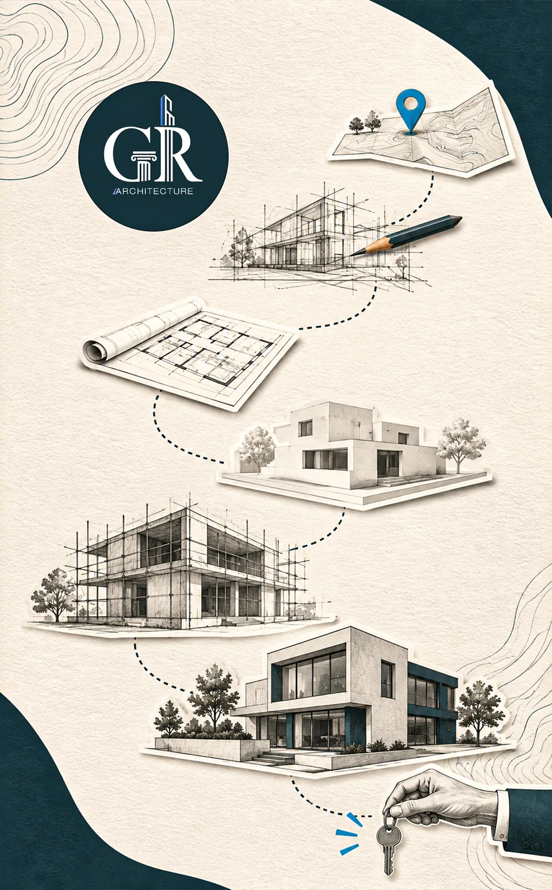
How we work
How a project moves from the first site visit to the day the keys change hands.
We begin with the place: its terrain, orientation, access and the neighbourhood around it.
First ideas are drawn by hand and tested quickly against the brief, the budget and the site.
The design is resolved into plans, sections and details that builders can work from.
3D models and photorealistic renders show the space before anything is built.
We follow the project on site so that what is built matches what was designed.
The finished space is handed over, ready to live in, work in or welcome guests.
Selected work
Architecture, interiors and infrastructure visualization. Open a project to see the full gallery.

ArchitectureHospitality · 2026
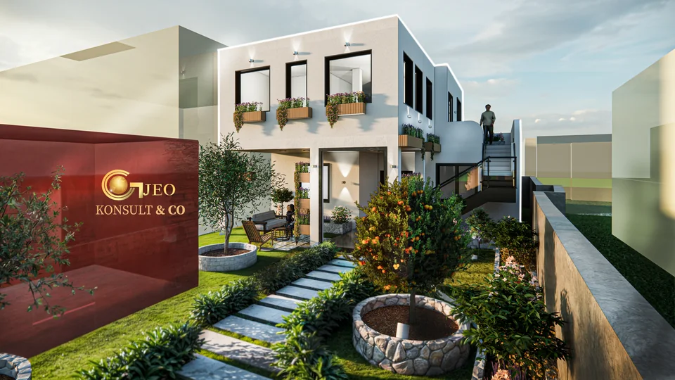
ArchitectureResidential · 2025
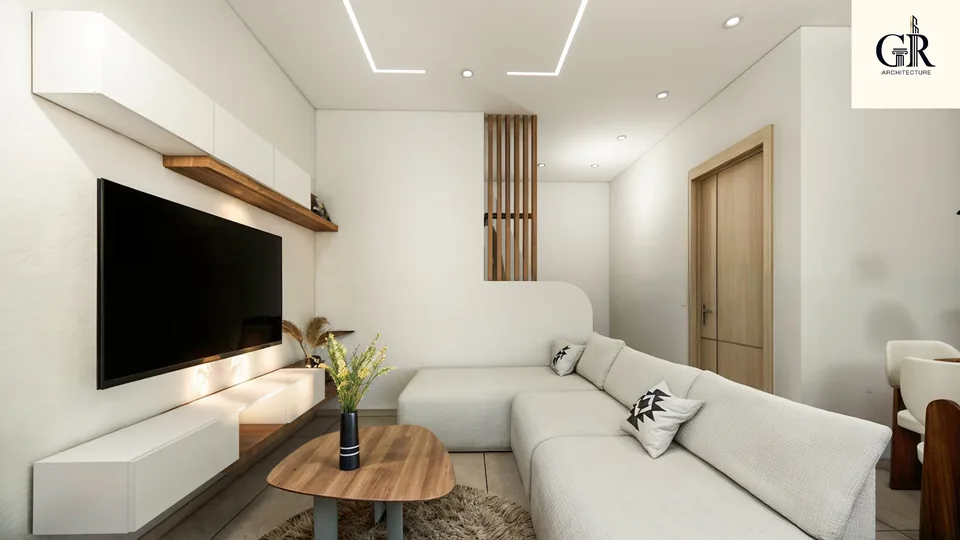
InteriorsInterior · 2024
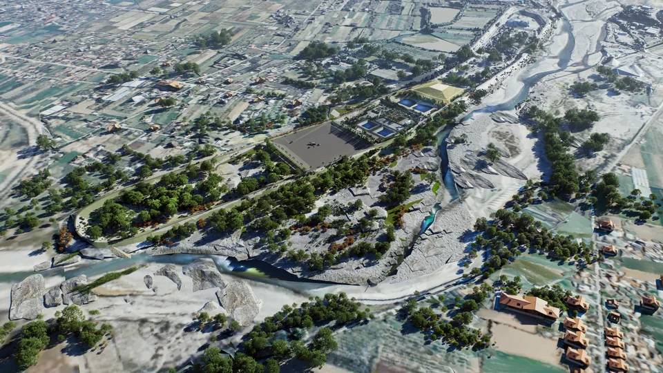
InfrastructureModeling & visualization · 2026
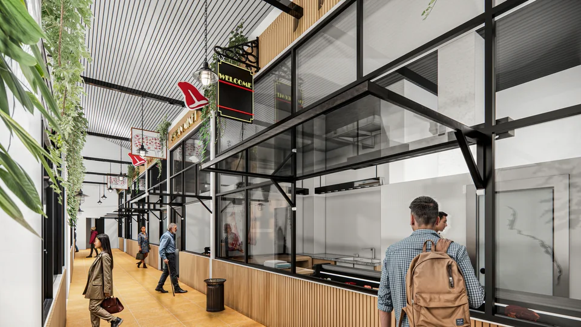
ArchitectureCommercial market · 2025
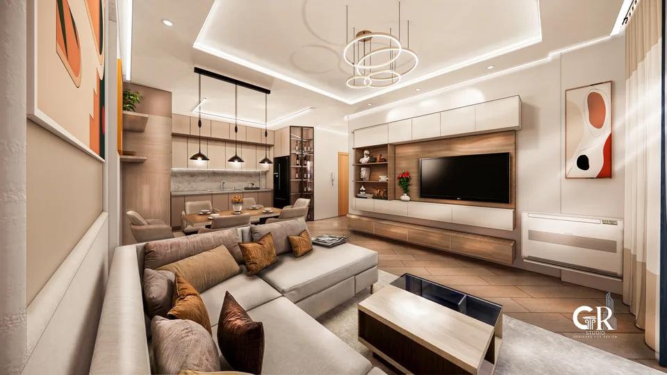
InteriorsInterior · 2023
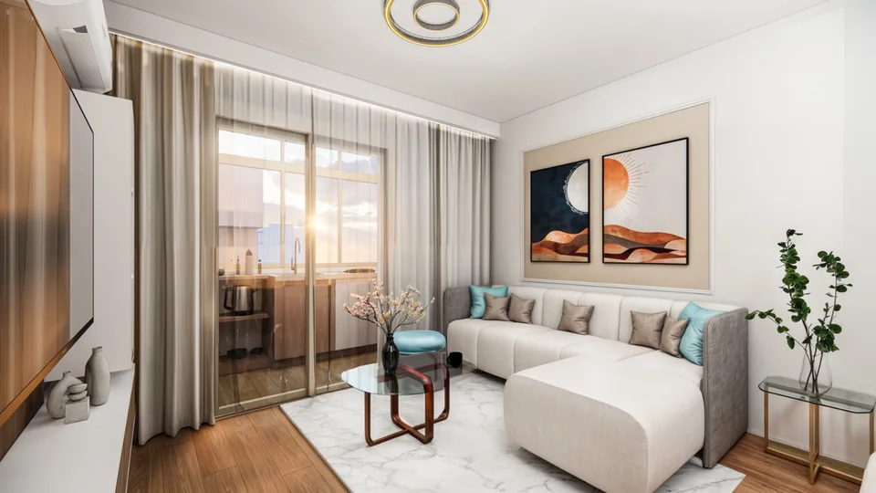
InteriorsInterior · 2024
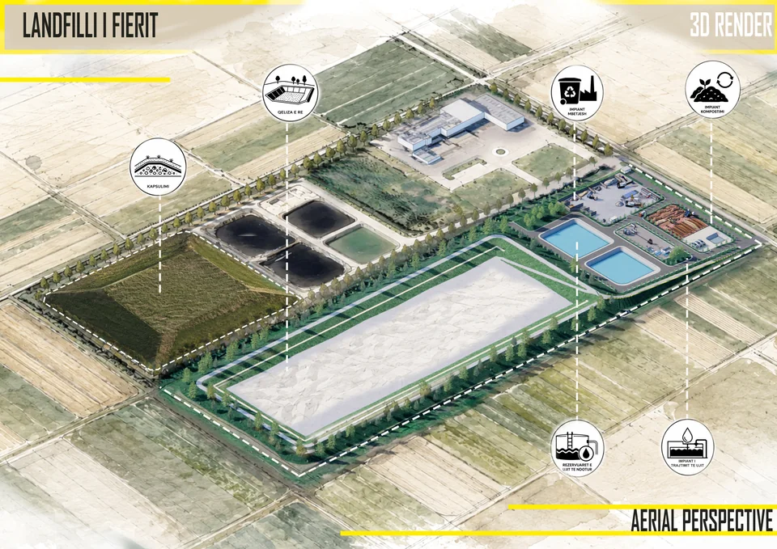
InfrastructureModeling & visualization · 2026
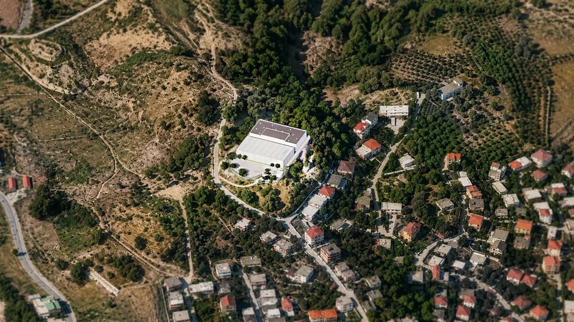
InfrastructureVisualization · 2026
Our practice
From the first idea to the details that make a place feel considered.
New buildings and renovations, from first concept to construction drawings.
Public spaces, sites and infrastructure shaped around their landscape and community.
Homes, hotels and shops, resolved down to joinery, materials and light.
Photorealistic renders and aerial boards that show a project before it exists.